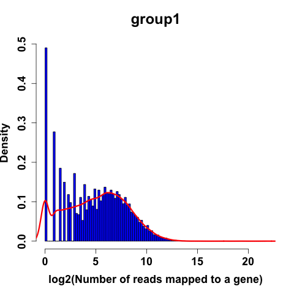
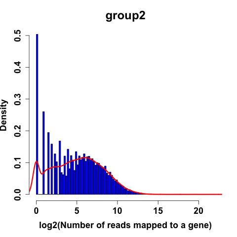
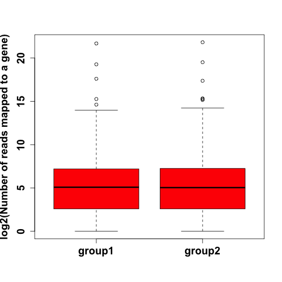
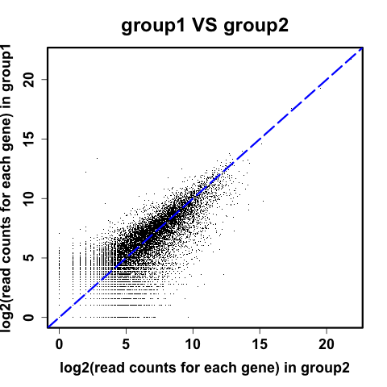
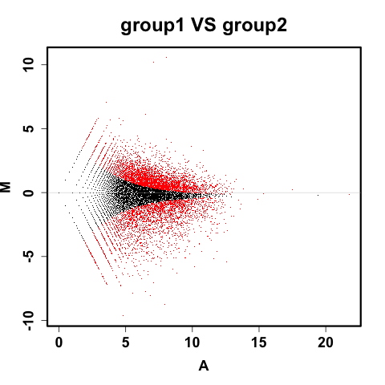

Tips: change zoom level with Ctrl + or Ctrl -
|  |  |
| Histogram of the number of reads for genes | Histogram of the number of reads for genes |
|  |  |
| Boxplot of read counts for each gene | Scatterplot comparing the number of reads for each gene for group1 and group2 |
|  |
| Differentially expressed genes on the MA-plot |
method to identify differentially expressed genes: LRT
output directory: /Users/zhangz/Documents/DEGandMore/data